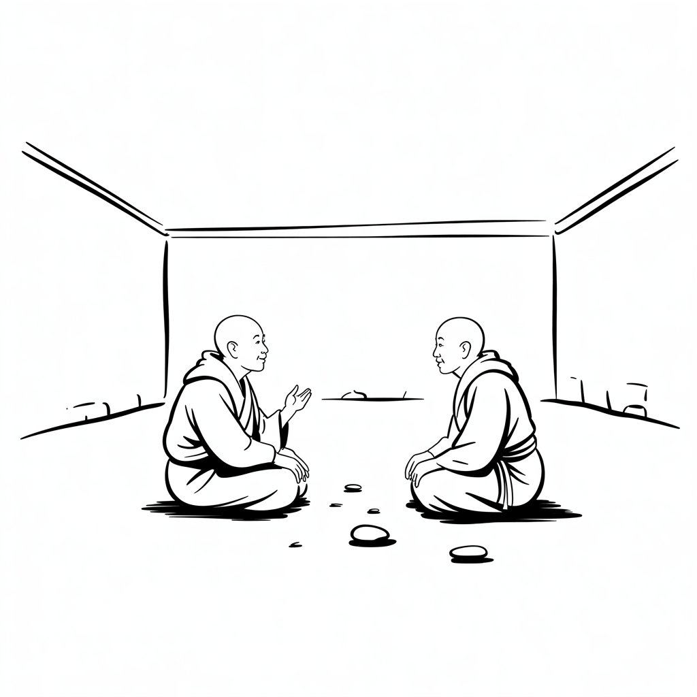

"The central purposes of Tibetan monastic debate are to defeat misconceptions, to establish a defensible view, and to clear away objections to that view. Debate is not mere academics, but a way of using direct implications from the obvious in order to generate an inference of the non-obvious state of phenomena."
The human steers. The AI amplifies. Neither writes alone. In this method, human and agent play the parts of a two monks debate. Every entry in the journal survived that debate before it was written — challenged, refined, sharpened by two perspectives that see different things.
The practice isn't new — daily notes for decades, always there to return to when issues surfaced at work, even years later. What's new is the structure. Human and agent pair together to write, debate, and organize. The journal becomes structured knowledge, not just notes.
Sparks graduate to threads. Threads graduate to handbooks. The furnace burns what doesn't survive. The agent links, connects, and surfaces patterns the human missed. What remains is steel — compressed, tested, proven.
No amount of compute solves taste. Ten Nvidia 3090s can't solve it. A self-improving loop can't solve it. The one thing that addresses taste is a human who stays at altitude — who defines what good looks like before the AI writes, and evaluates what came back after.
The journal is grinding implicit judgment into explicit signal. Each session where the human steers and corrects, where "no, not that — this" gets captured, that's taste being externalized. One session at a time.
A journal so clear on what the builder's taste actually is — what he builds, why, how he evaluates, what he rejects — that an autonomous agent could act with that taste. Not "do as told" but "do as I would have done."
Maybe not an impossible dream. Models improve, context windows expand, memory architectures mature. The journal work compounds regardless. If the technology catches up, the taste is already externalized and waiting. If it doesn't, you still have the best-structured partnership journal a builder ever kept.